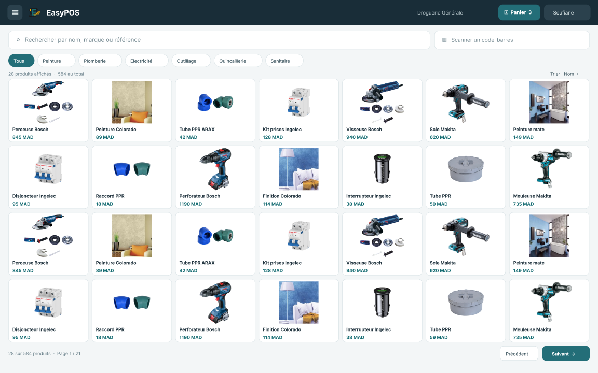
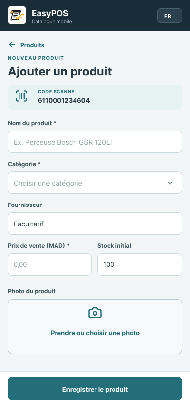
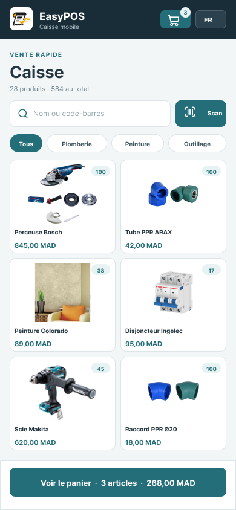

Caisse rapide
Choisissez un produit par sa photo, son nom ou son code-barres. Gardez le panier accessible, puis confirmez le règlement.
Voir les étapesOPEN SOURCE · WINDOWS · FR / AR / EN
Vendez plus simplement, reconnaissez vos produits par leur photo et gardez le stock à jour. EasyPOS réunit catalogue, caisse, fournisseurs et rapports dans une application locale.
Installateur Windows x64 · Données de la boutique conservées sur votre ordinateur

LES OUTILS DE LA BOUTIQUE
Un parcours simple du premier produit à la vente, avec des écrans pensés pour le comptoir.
Choisissez un produit par sa photo, son nom ou son code-barres. Gardez le panier accessible, puis confirmez le règlement.
Voir les étapesCréez des catégories, ajoutez prix, photo et quantité, puis retrouvez la fiche produit et son code-barres.
Créer un produitUne vente payée diminue le stock. Une réception fournisseur ou un ajustement enregistre les autres mouvements.
Suivre le stockAvec le téléphone sur le même Wi-Fi, photographiez un code-barres, complétez un produit ou ouvrez la caisse mobile.
Configurer le mobileVOIR EASYPOS EN ACTION
Aperçus de la conception EasyPOS avec produits et prix de démonstration. L'apparence finale dépend de vos données et du thème choisi.
La grille affiche davantage d'articles, leurs images, leurs prix et leur catégorie sans cacher les actions de vente.
Apprendre à encaisser



DÉMARRER SANS DEVINER
Téléchargez l'installateur Windows x64 depuis la dernière version GitHub.
Renseignez le nom, la devise et les informations du ticket. Changez le mot de passe initial.
Créez catégories et produits avec prix, stock et photos, ou importez un catalogue ZIP.
Encaissez à la caisse, vérifiez les mouvements de stock et créez une sauvegarde ZIP.
QUESTIONS FRÉQUENTES
La caisse et les données fonctionnent localement sur le PC. Internet est nécessaire pour télécharger l'installateur ou de nouvelles versions. Le téléphone doit accéder au PC sur le même réseau Wi-Fi.
Dans EasyPOS sur le PC, ouvrez Accès mobile dans l'en-tête. Sur le téléphone, ouvrez l'adresse affichée et saisissez le code de connexion. La prise de photo du code-barres fonctionne sans installation d'application mobile.
Oui, vous pouvez le retrouver par son nom ou son image. Pour une étiquette à scanner, sélectionnez le produit dans le catalogue puis exportez une planche de codes-barres PDF.
Créez régulièrement une sauvegarde ZIP dans Paramètres → Données & sauvegardes et conservez une copie hors de l'ordinateur. Le guide explique aussi la restauration et les mises à jour.
UN PROJET OUVERT
EasyPOS est un fork open source de PharmaSpot. Son code, ses versions et sa documentation sont disponibles sur GitHub. Les données de votre boutique restent dans votre installation locale.
Consultez les notes de version et téléchargez l'installateur officiel. Une installation existante peut rechercher les mises à jour depuis Paramètres.
Ouvrir les versions